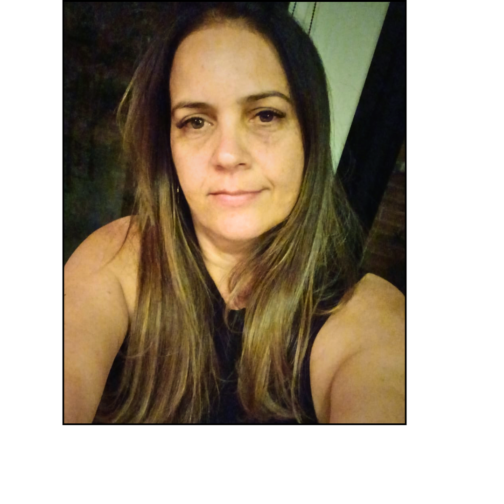

Sobre mim

Sou formada em Administração de Empresas com enfase em Marketing pela Faculdade Ites e pos graduada em Gestão Empresarial pela Faculdade Barão de Mauá. Atualmente estou no 3 semestre do curso de Sistemas para Internet na Fatec de Taquaritinga, que terá conclusão em julho/2025.
Resumo Profissional
Experiência como profissional generalista em empresas na área Administrativa, Fiscal, Recursos Humanos e Planejamento e Controle de Produção (PCP). Atualmente trabalho na empresa Sisplan Consultores, empresa esta especializada em consultoria de tecnologia de informação. Atendemos grandes empresas no ramo de açucar e álcool. Profissional com perfil ágil e focada nos resultados da equipe e da empresa.
Sisplan Consultores
Analista Administrativo